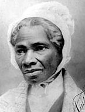
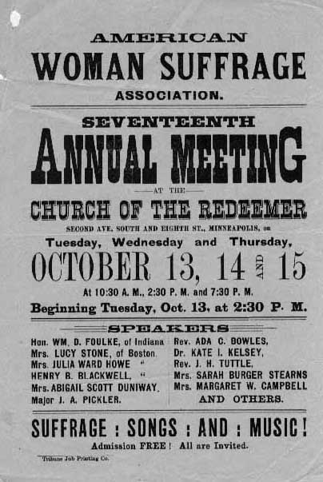

|
The mid-nineteenth century proved a time of upheaval in
women's lives. Women, black and white, organized, declared
rights, and struggled to participate in the public
(especially political) sphere. By 1877, they had voiced
revolutionary goals but had not achieved equality.
The fight for women's rights began before supporters
organized any formal efforts. Initially, nineteenth-century
white women achieved some success by taking their domestic
responsibilities into the public sphere. They took active
roles in voluntary and benevolent associations including

Suffrage activists Susan B. Anthony (left) and Elizabeth Cady Stanton
helped found the Women's National Loyal League, which worked to bring an end to
slavery.
|
temperance, child labor, health reform, education, and
abolitionism that drew upon traditionally domestic chores,
such as child rearing, household tasks, and family
management.
The links between women's rights and the abolition
movement were drawn early. As abolitionists publicly
demanded civil rights for African American slaves, some
women became aware of the similarities between their
condition as women and that of slaves. They found it easy
to draw parallels between their situation and that of
African Americans: neither group could vote, and the law
deemed both inferior to white men. Women's commitment to
anti-slavery led some to form their own abolitionist
organizations, including the Loyal League. These female-run
abolitionist groups eventually led to the founding of
woman's rights organizations, especially the American Equal
Rights Association and the American Woman Suffrage
Association.
The transition from reform movements to women's rights
seemed a natural one. Women, frustrated with the
restrictions placed on them in many organizations, gladly
took up the fight to secure themselves a recognized place in
society. They were aided by the ability to transfer the
skills they had gained in the various associations to their
campaigns for women's rights. In particular, women had
learned the importance of organization, public speaking,
persuasive writing, and argumentation. As a result, many of
the early leaders of the woman's rights campaign, including
Lucretia Mott and Elizabeth Cady Stanton, had been prominent
and outspoken abolitionists. Susan B. Anthony had been both
a temperance and an anti-slavery activist.
Seneca Falls
The first formal meeting in the fight for women's rights
took place between July 19 and 21, 1848, in Seneca Falls,
New York. At this convention a group of feminists,
including Stanton, Mott, Jane Hunt, Mary McClintock, and
Martha C. Wright, gathered together hundreds of supporters,
male and female, and launched a national campaign for
woman's rights.
The activists at Seneca Falls presented a Declaration of
Rights for Women, also known as the Declaration of Rights
and Sentiments, which asserted a list of grievances and
resolutions. Stanton, the Declaration's author, modeled her
document on the Declaration of Independence, but her
rendition put American men in the role of oppressor. The
Declaration's list of grievances accused men of denying
women the right to vote, to own property, and to access
equal representation and education. It further berated men
for taking away women's rights at marriage and highlighted
the dangers of women's subordination to men, including their
vulnerability to violence. It demanded the grievances be
addressed and offered twelve resolutions. By the end of the
Convention, one hundred people signed the document,
including sixty-eight of the three hundred women in
attendance, and thirty-two of the men. The Declaration of
Rights became a rallying point for the women's rights
|

Sojourner Truth
|
movement. Stanton, much to the dismay of some of the people
involved, also used the convention as an opportunity to
demand women's suffrage.
Two weeks after the Seneca Falls Convention, an even
larger woman's rights meeting was held in Rochester, New
York, and other woman's rights conventions soon followed.
The most well known meetings took place in Salem, Ohio,
Worcester, Massachusetts, and Akron, Ohio. At the
convention in Akron, in 1851, runaway slave and women's
rights activist Sojourner Truth addressed the audience. In
response to ideas about the natural delicacy of white women,
she recounted some aspects of her life as a slave. Although
white women were seen as too feminine and delicate to do any
hard labor or even get into a carriage themselves, Truth
asserted herself as a woman despite her work as an enslaved
field laborer and mother of thirteen. As she listed her
hardships, Truth continued to ask her audience, "Ar'n't I a
woman?" She and other free black women demonstrated that
they, too, wanted equal rights.
Women continued to organize and lobby for their rights
throughout the 1850s. In 1854, Stanton founded the New York
Suffrage Society, which organized petition drives and
gathered ten thousand signatures in favor of women's
suffrage and property rights. That year, both Anthony and
Ernestine Rose spoke to various legislative committees. In
addition, Stanton became the first women to speak in the New
York Senate when she presented the society's petitions to
it.
By 1860, women had gained access to public and private
institutions that educated them for careers in teaching.
Newly formed women's medical hospitals also trained them to
work in the medical profession as physicians and medical
missionaries. It was initially assumed that female doctors
would care only for other women and children.
Women and the Civil War
The Civil War brought women in even greater numbers into
the public sphere--raising money for soldiers, nursing the
wounded, and providing other valuable services. American
women founded more than 20,000 aid societies to supply the
troops with food, clothing, and medical supplies. In the
North, women soon filled the ranks of the United States
Sanitary Commission, a volunteer organization run by men but
dependent on the efforts of women to get medical supplies
and personnel to army hospitals. In addition, women also
filled the jobs left empty by the soldiers on the
battlefield, including those as plantation mistresses,
factory workers, nurses, and treasury employees. Both the
United States and Confederate governments, for example,
employed several hundred women to work in the treasury and
at other government posts during the war. Women's voluntary
participation in various roles highlighted their desire to
sustain the home front, even if it meant assuming
traditionally male roles. Some women hoped that their
successful performance during the Civil War would assist
them in their fight for suffrage and other rights of
citizenship.
Women in the North and South also asserted their rights
as citizens through wartime protests. In 1863, angry women
participated in bread riots in the South and draft riots in
the North. In separate but similar incidents, southern
women, especially in Virginia, Alabama, and North Carolina,
took to the streets to demand fair food prices and
government protection. Northern women similarly
participated in anti-government actions. Many lower-class
women participated in the New York City Draft Riot in the
summer of 1863 to protest the impressment of their husbands
into military service and wartime policies designed to free
slaves. During the lengthy and violent riot, several
hundred women were arrested, convicted, and jailed.
The Postwar Years
As the Civil War came to a close and Congress discussed
extending the vote to freed African Americans, feminists
hoped that the expansion of the franchise would extend to
female citizens. They were disappointed by the inclusion of
the word "male" in the Fourteenth Amendment, the first time
gender-specific language had been used in the Constitution.
Such wording made clear the idea that Congress intended to
extend voting rights only to men. To protest the exclusion
of women's suffrage in the Fourteenth Amendment, Stanton ran
for Congress in August 1866. She gained only twenty-four
votes.
After the passage of the Fourteenth Amendment, female
activists regrouped. On May 10, 1866, the National Women's
Rights Convention established the American Equal Rights
Association to work for the rights of all women, regardless
of race. The women involved hoped that a coordinated effort
would ultimately result in women's suffrage. Republican men
who felt threatened by the idea of woman suffrage often
ridiculed the mostly northern Republican women who were
involved in this movement.
White feminists disagreed with the tactics of the
American Equal Rights Association. Anthony and Stanton, for
example, thought the biracial organization unfairly ranked
African-American rights ahead of women's suffrage.
Consequently they formed the National Woman Suffrage
Association (NWSA) in May 1869. Stanton became the NWSA's
president and actively pursued a national campaign for white
|

The American Woman Suffrage Association was skilled
at attracting potential supporters to its events.
|
women's suffrage. The NWSA attracted many working-class
women and radicals, and refused to support the Fifteenth
Amendment unless it enfranchised women as well as African
Americans.
The NWSA had many opponents, even among those working for
woman's rights. Later that year, Lucy Stone, Julia Ward
Howe, and other conservative feminists established the
American Woman Suffrage Association (AWSA). In contrast to
the NWSA, the AWSA invited male as well as female members
and pursued a state-by-state, instead of a nationwide,
strategy for women's suffrage. The AWSA supported the
Fifteenth Amendment and lobbied at the Republican
convention. The membership of the AWSA was largely
middle-class. Not wanting to detract from any effort for
women's suffrage, many women joined both organizations.
Some of the efforts for women's suffrage proved
successful. In Wyoming, women received the right to vote on
September 6, 1870. Few states followed suit, however, and
it would be another fifty years before the right was given
to women throughout the United States. The slow-moving
results did not slow down radical feminists' attempts to
gain rights. In an effort to gain the franchise, Victoria
Woodhull presented a petition for women's suffrage to the
House Judiciary Committee on January 11, 1871. Her address
to the Judiciary Committee was the first one made directly
by a woman.
Women continued to participate in reform movements in
post-Civil War America. They primarily focused, as before,
on issues seen as vital to the stability of the household.
When the Women's Christian Temperance Union was established
on November 18, 1874, Annie Wittenmyer became the
organization's first president. The WCTU would play an
integral part in the fight against alcohol's detrimental
effects on fathers and families.
After emancipation, freedwomen worked to improve the
legal and economic status of their families and communities.
Like white women, they could not vote, but they
participated in political activities. Black women attended
rallies and parades and spoke at public meetings encouraging
their men to vote. They hoped that male African American
enfranchisement would give them a voice and the rights they
had been denied as slaves. African-American leaders such as
Ida B. Wells of Tennessee promoted education, civil rights,
and campaigns against Southern violence. Black women also
asserted themselves as women and mothers in the postwar
years as they actively worked to reclaim their families and
win legal recognition of their marriages. In addition,
African American women actively worked to gain voting rights
as well as civil rights, even though they were often
excluded from the larger, white-run women's organizations
fighting for suffrage and other women's rights.
By the end of Reconstruction, the fight for women's
rights remained close to where it was at the Seneca Falls
Convention in 1848. For the United States Centennial
Exposition in 1876, Stanton and Matilda Joslyn Gage prepared
a document, the Declaration of Rights of Women, that they
hoped would alert the public of the difficulties and
inequalities that women continued to face in postwar
America. This document, much like the Declaration of Rights
and Sentiments in 1848, mirrored the rhetoric and ideas of
the Declaration of Independence but highlighted the
contradictions between the official ideals and the realities
of women's lives. Members of the National Woman Suffrage
Association asked the centennial committee to allow them to
present their document at the public celebration, but the
committee denied this request. In protest, at the end of
the official program, Anthony and Gage pushed their way to
the speaker's platform and presented a copy of their
Declaration of Rights. They demanded equal civil and
political rights for American women, including the right to
serve on juries, no taxation without representation, and the
removal of the word "male" from state constitutions and
judicial codes. Taking things further than did the 1848
Declaration, the centennial document demanded equal
political rights for American women.
Source: Joan Waugh, ed., Facts on File Encyclopedia of American
History: Civil War and Reconstruction, 1856 to 1869 (New York: Facts on
File, 2003), 397-399.
|